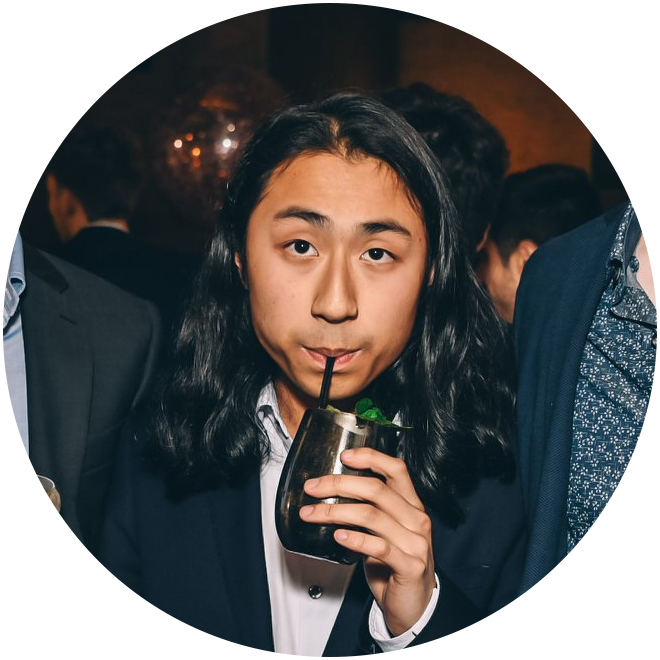

About Me
Hailing from Melbourne, Australia, I’m a lover of all sorts of puzzles and challenges. My interests lie in the intersection of programming and mathematics, and by complementing one another, provide clarification and uncover insights. Dancing between creative problem solving and mathematical rigour, I strive to creatively apply my skills wherever I go, creating impactful solutions.

Education
Oct 2020 - Jul 2021
University of Cambridge
Master of Advanced Study (MASt) in Mathematical Statistics
Aug 2019 - Jul 2020
University of Sydney
Bachelor of Science (Honours) (University Medal)
2016 - 2019
University of Melbourne
Bachelor of Science (WAM: 91.25)
(Relevant subjects/coursework)
2010-2015
Penleigh and Essendon Grammar School
Victorian Certificate of Education (VCE) (ATAR: 99.85)
University of Cambridge
Master of Advanced Study (MASt) in Mathematical Statistics
- Scholarship at Queens' College
- Recipient of:
- Rae and Edith Bennett Travelling Scholarship (UniMelb)
- Harriet Beard Scholarship (USyd)
- Eleanor Sophia Wood Postgraduate Research Travelling Scholarship (USyd)
Aug 2019 - Jul 2020
University of Sydney
Bachelor of Science (Honours) (University Medal)
- Major in Statistics
- Project in variational approximation of stochastic block models (SBMs)
2016 - 2019
University of Melbourne
Bachelor of Science (WAM: 91.25)
- Specialisations in Statistics + Pure Mathematics
- Dean’s Honour List, Faculty of Science, 2017
-
Achieved grades among the top 3% of the cohort.
- E. R. Love Prize, Faculty of Science, 2018
-
Achieved top rank in subject (MAST30026: Metric and Hilbert Spaces)
(Relevant subjects/coursework)
2010-2015
Penleigh and Essendon Grammar School
Victorian Certificate of Education (VCE) (ATAR: 99.85)
- Dux Proximus
- Vice-Captain of Firsts Table-Tennis
- National Youth Science Forum (NYSF) attendee
- National Mathematics Summer School (NMSS) attendee
- Subjects:
- Mathematical Methods
- Specialist Mathematics
- Latin
- Physics
- English
- Chinese
Experience
Jul 2020 - Oct 2020
Data Analytics Consultant @ KPMG Australia
Dec 2019 - Feb 2020
Summer Analyst Intern @ Quantium
Nov 2018 - Feb 2019
Data & Analytics Intern @ KPMG Australia
Mar 2018 - Jul 2019
Student Peer Tutor @ University of Melbourne
Dec 2017 - Jan 2018
Vacation Scholarship Researcher @ University of Melbourne
Data Analytics Consultant @ KPMG Australia
- Creation of automated workflows for data wrangling, consolidation and analysis in relation to Victoria Hotel Quarantine. (Python, Alteryx, VBA)
Dec 2019 - Feb 2020
Summer Analyst Intern @ Quantium
- Responsible for the initiative to migrate code into repeatable and flexible functions, increasing code-based analytics efficiency by 3x. (Python, PySpark, SQL)
- Performed data analytics consulting projects for a large FMCG supplier of Woolworths, identifying pain-points through testing various hypotheses and providing optimised ranging strategies to increase 2% growth in sales nation-wide.
Nov 2018 - Feb 2019
Data & Analytics Intern @ KPMG Australia
- Created an interactive network visualisation for the KPMG Deals team, consisting of 10,000+ executives, which provides insights on the influence companies and people have on each other (R, Gephi, Tableau, D3.js, Javascript).
- Prepared and presented technological demonstrations at the KPMG Insight Centre, to better communicate to clients the benefits and potential emergent technology has to their businesses.
- Involved in the front-end design and testing for a collection of dashboards for a real estate superfund, including wrangling economics data via APIs (Python, SQL).
Mar 2018 - Jul 2019
Student Peer Tutor @ University of Melbourne
Dec 2017 - Jan 2018
Vacation Scholarship Researcher @ University of Melbourne
Competitions
2019
Ranked Top 10% of Pairs @ Simon Marais Mathematics Competition
2018
Campus Finals @ UBS Investment Banking Challenge
2017
10th overall, 4th in Aus @ Simon Marais Mathematics Competition
State Finals @ FMAA Asset Management Competition
Campus Finals @ FMAA Management Consulting Case Competition
2015
Gold Medal @ Australian Mathematical Olympiad
Honourable Mention @ Asia-Pacific Mathematical Olympiad
Ranked Top 10% of Pairs @ Simon Marais Mathematics Competition
2018
Campus Finals @ UBS Investment Banking Challenge
2017
10th overall, 4th in Aus @ Simon Marais Mathematics Competition
State Finals @ FMAA Asset Management Competition
Campus Finals @ FMAA Management Consulting Case Competition
2015
Gold Medal @ Australian Mathematical Olympiad
Honourable Mention @ Asia-Pacific Mathematical Olympiad